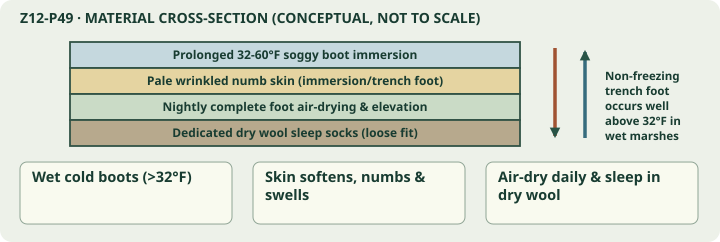

Z12-P49 · Extreme environments · New manuscript
Prevent immersion foot (trench foot) and cold-wet skin breakdown in marshes
Prevent debilitating non-freezing cold-wet foot injury during prolonged soggy wetland or rainy travel.
When it applies · Multi-day wet forest, bog, marsh or coastal rain outings where feet remain cold and wet for many hours.
Equipment · Quick-draining footwear or waterproof boots suited to conditions, multiple dry wool/synthetic socks, dry camp shoes and towel.

Actions
- Recognize that **immersion foot (trench foot)** occurs well ABOVE freezing (typically 32°F–60°F) when feet stay continuously cold, wet and constricted inside boots for many hours—skin turns pale, wrinkled, numb, swollen and painfully tender.[X13, E10, E06]
- Air out and dry feet completely at camp every evening, switch immediately into dedicated dry wool sleep socks, elevate feet slightly and inspect toes and arches daily for maceration, numbness or blisters.[X13, E10, ED]
- Avoid wearing soaked cotton socks or sleeping in damp boots/socks; keep footwear loose enough for steady circulation and carry dry reserve socks inside a sealed waterproof bag.[E10, X13]
Failure recognition · Hiking three straight rainy 45°F days through soggy marshes without ever drying feet or changing into dry sleep socks at night.[X13, E10]
Verify · Confirm feet are dried completely daily, dedicated dry sleep socks remain sealed waterproof and zero numbness or white macerated skin is progressing.[X13, E10, ED]
Stop or change course · Persistent numbness, blotchy red/purple swelling, severe throbbing pain or skin breakdown after prolonged wet-cold exposure requires ending wet travel and seeking medical evaluation.[X13, T01, T02]
Evidence and editorial notes
- E06 · CDC · Preventing Hypothermia (current web edition)
- Section: Recognizing and treating hypothermia · Conditions: Cold wet exposure; signs such as confusion, slurred speech, fumbling or drowsiness
Support: Suspected hypothermia warrants prompt help and protection from further cooling. It can occur above freezing if wet or chilled.
Limitations: Early mild shivering can mask rapidly worsening judgment impairment. · Conflicting evidence: None; aligns with ARC and WMS guidance.
Editorial note: Anchors exposure-to-medical escalation thresholds. · Specialist reviewer: Wilderness medicine
Primary source · checked 2026-11-24 - E10 · NWS · What To Do If You're Caught in a Winter Storm (current web edition)
- Section: Outside > Protect yourself from frostbite and hypothermia · Conditions: Outdoor winter storm
Support: Keep clothing dry and avoid overexertion. Wetness accelerates cooling.
Limitations: Cotton retains moisture and accelerates conductive and evaporative heat loss. · Conflicting evidence: None; reinforces moisture-management layering.
Editorial note: Links sweat management to overnight insulation integrity. · Specialist reviewer: Cold-weather shelter and wilderness medicine
Primary source · checked 2026-11-24 - T01 · American Red Cross · First Aid Steps (current web edition)
- Section: First Aid Steps > Check the scene; check the person · Conditions: Lay responder in United States; assess safety before contact
Support: Check scene safety, responsiveness, breathing and immediately life-threatening conditions.
Limitations: Lay guidance does not replace advanced clinical or rescue protocols. · Conflicting evidence: None; universal first-response opening gate.
Editorial note: Anchors scene-safety-first rule across Z01. · Specialist reviewer: EMS and wilderness medicine
Primary source · checked 2026-11-24 - T02 · American Red Cross · First Aid Steps (current web edition)
- Section: First Aid Steps > Call 9-1-1 · Conditions: Lay emergency response to unresponsiveness, abnormal breathing or severe bleeding
Support: Activate EMS and get needed equipment. Follow dispatcher directions and act within training.
Limitations: Remote locations may delay EMS arrival, requiring sustained stabilization after activation. · Conflicting evidence: None; aligns with NPS-E.
Editorial note: Mandates early emergency activation and dispatcher adherence. · Specialist reviewer: EMS and wilderness medicine
Primary source · checked 2026-11-24 - X13 · NPS · Wetlands Subject Guide (current web edition)
- Section: Wetlands > Footing, Immersion, Insects and Water Quality · Conditions: Travel near marshes, swamps, fens and slow-water estuaries
Support: Wetlands combine wet-cold immersion risk, concealed snags, unstable muck that drains energy rapidly, insect-borne disease exposure and high-organic/stagnant water requiring strict treatment or alternate sourcing.
Limitations: Footwear immersion and trench-foot/cold injury occur even in mild temperatures during prolonged wetland exposure. · Conflicting evidence: None; complements EPA-WETLAND and W16.
Editorial note: Grounds wetland navigation, foot-care and cold-wet exposure cards. · Specialist reviewer: Wilderness safety and wetland operations
Primary source · checked 2026-11-24
Source lineage · NPS wetlands and CDC cold/wet exposure; new manuscript · Classification · New manuscript.